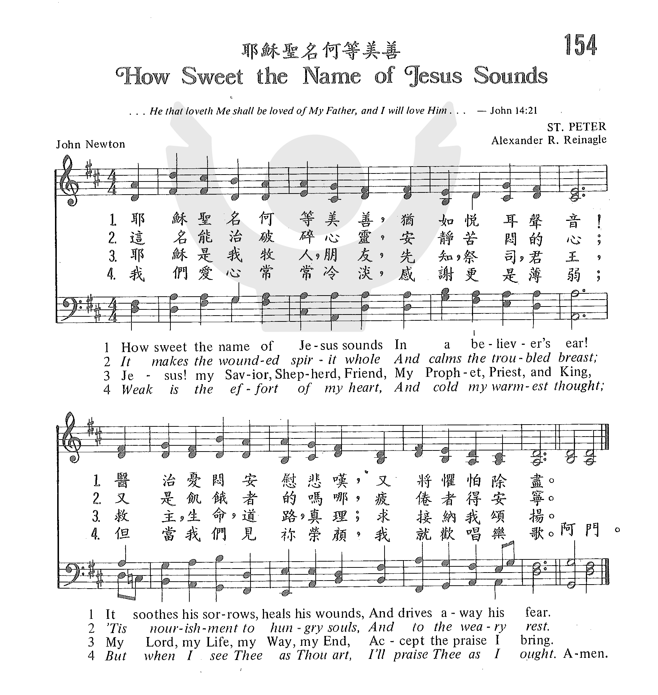

0453 0909 How sweet the name of Jesus sounds _John
Newton 主名至寶 生命058 ▲ ST. PETER
How sweet the name of Jesus sounds In a believer's ear
Author: John Newton (1779)
|
生命聖詩 - 58
主名至寶 (How Sweet the Name of Jesus Sounds) |
|
1 How sweet the name of Jesus sounds
in a believer's ear!
It soothes our sorrows, heals our wounds,
and drives away our fear.
2 It makes the wounded spirit whole
and calms the troubled breast;
'tis manna to the hungry soul,
and to the weary, rest.
3 O Jesus, shepherd, guardian, friend,
my Prophet, Priest, and King,
my Lord, my Life, my Way, my End,
accept the praise I bring.
4 How weak the effort of my heart,
how cold my warmest thought;
but when I see you as you are,
I'll praise you as I ought.
5 Till then I would your love proclaim
with every fleeting breath;
and may the music of your name
refresh my soul in death.
Psalter Hymnal, 1987
|
耶穌聖名，何等甜美，屬主聖徒愛聽；
醫治痛傷，安慰悲苦，消除心中憂驚，
消除心中憂驚。
主名能醫破碎心靈，安定煩惱心情；
飢渴的人得到飽足，疲倦的人安寧，
疲倦的人安寧。
主名是我堅固磐石，是避難所，盾牌；
也是豐富無量寶藏，充滿恩典慈愛，
充滿恩典慈愛。
主是良友，善牧，佳偶，祭司，先知，君王，
也是救主，生命，道路，求納我們頌揚，
求納我們頌揚。
願趁今天氣息尚存，宣揚主愛不停；
面臨死亡，願主美名使我心得安寧，
使我心得安寧。 |
|
https://www.zanmeishige.com/tab/25511.html?songbook=1&index=154


https://hymnary.org/hymn/SSS2019/page/449 |
| |
|
http://www.hymncompanions.org/Dec/10/stream.php
主名至寶 How Sweet the Name of Jesus Sounds
耶穌聖名，何等甜美，屬主聖徒愛聽；
醫治痛傷，安慰悲苦，消除心中憂驚。
主名能醫破碎心靈，安定煩惱心情；
飢渴的人得到飽足，疲倦的人安寧。
主名是我堅固磐石，是避難所，盾牌；
也是豐富無量寶藏，充滿恩典慈愛。
主是良友,善牧,佳偶,祭司,先知,君王，
也是救主,生命,道路，求納我們頌揚。
願趁今天氣息尚存，宣揚主愛不停；
面臨死亡，願主美名，使我心得安寧。
 (請點耳機收聽)
(請點耳機收聽)
這首詩是約翰牛頓（John Newton, 1725–1807, 見八月十二日）所作。
他的妻子瑪麗是一位信心堅定、虔誠愛主的基督徒。 她深愛約翰，一直禱告求神使他脫離顛沛的海洋生活。
1754年，他們終於在利物浦定居下來。約翰每日記錄潮汐的起落，船隻貨物的進出，他的生活平淡恬靜。三年來，約翰漸漸地關心他的靈命，並感到神的呼召。他開始研讀各種聖經註釋，屬靈書籍；並學習希伯來文，及希臘文。
1758年，約翰牛頓開始傳道，英國國教的主教因他沒有受過大學教育，而不願將他封牧。
六年後，他被聖公會按立，奉派在一小村莊牧會，他和瑪麗卻安之若素。
有一富豪在該村的附近有一片土地及房屋，願供他們使用。 約翰牛頓就在此開始設立成人及兒童的查經班。 他想教他們一些新歌，和好友顧柏（William Cowper,
見十一月三日）合編了一本供平民使用聖詩集。
在當時，這是創舉，因為聖公會還認為唱詩不合經訓，在教義上視為危險的事。
本詩歌是以雅歌1:3 為根據：「你的名如同倒出來的香膏」。 詩中列舉耶穌諸名及其香甜。
他與罪爭戰的經歷，深知耶穌的尊名，可使創傷的靈得完全，煩惱的心享安寧。
這首詩歌有四個曲調。
本調是海斯汀（Thomas Hastings, 1784-1872）所譜。 他和梅遜（Lowell Mason）是美國宗教音樂的改革者。
海斯汀的父親是獸醫，在鄉村工作。 海斯汀每天上學要走六哩路。 他有深度的近視，仍孜孜不倦勤習樂理。
他在十八歲時開始領導鄉村教會的詩班；1823-32年間任一雜誌編輯，極力鼓促改進教會音樂的觀念。
1832年，他應紐約市十二個教會之請，領導他們的詩班達四十年之久。 因此有人說：「他的紀念碑就是他的音樂。」
另一常用的是芮耐格（Alexander R. Reinagle, 1799-1877）的曲譜。
他是奧地利人，出生在英國，是一位卓越的大提琴家，任聖彼得教堂司琴三十一年。這首曲譜原為詩篇118篇而作。
還有兩首曲譜的作者是郝華（Cuthbert Howard）和陶高爾（Neil Dougall）。
中英文聖詩集參考
英文歌名 How
Sweet the Name of Jesus Sounds
頌主新歌 185
頌主新歌(中英雙語) 180
教會聖詩 154
生命聖詩 58
歡欣讚美 123
聖徒詩集 161
聖詩 364
台語聖詩 311
恩頌聖歌 92
世紀讚頌 109
頌主聖詩 463
https://www.jgospel.net/c/2/31897/279/3986/%E7%94%9F%E5%91%BD%E8%81%96%E8%A9%A9-58-%E4%B8%BB%E5%90%8D%E8%87%B3%E5%AF%B6-(How-Sweet-the-Name-of-Jesus-Sounds)-.aspx
這首詩是約翰牛頓（John Newton, 1725 –1807, 見p.2）所作。 他的妻子瑪麗是一位信心堅定，虔誠愛主的基督徒。 她深愛約翰，一直禱告求
神使他脫離顛沛的海洋生活。 1754年，他們終於在利物浦定居下來。約翰每日記錄潮汐的起落，船隻貨物的進出, 他的生活平淡恬靜。
三年來，約翰漸漸地關心他的靈命，並感到 神的呼召。 他開始研讀各種聖經註釋，屬靈書籍；並學習希伯來文，及希臘文。
1758年，約翰牛頓開始傳道，英國國教的主教因他沒有受過大學教育，而不願將他封牧。 六年後，他被聖公會按立，奉派在一小村莊牧會，他和瑪麗卻安之若素。
有一富豪在該村的附近有一片土地及房屋，願供他們使用。 約翰牛頓就在此開始設立成人及兒童的查經班。 他想教他們一些新歌，和好友顧柏（William Cowper,
見p.2）合編了一本供平民使用聖詩集。 在當時，這是創舉，因為聖公會還認為唱詩不合經訓，在教義上視為危險的事。
本詩歌是以雅歌1:3 為根據：「你的名如同倒出來的香膏」。
詩中列舉耶穌諸名及其香甜，他自己與罪爭戰的經歷，深知耶穌的尊名，可使創傷的靈得完全，煩惱的心享安寧。
這首詩歌有四個曲調。
本調是海斯汀（Thomas Hastings, 1784-1872）所譜。 他和梅遜（Lowell Mason）是美國宗教音樂的改革者。
海斯汀的父親是獸醫，在鄉村工作，海斯汀每天上學要走六哩路。 他有深度的近視，仍孜孜不倦勤習樂理；十八歲時開始領導鄉村教會的詩班。
1823-32年間任一雜誌編輯，極力鼓促改進教會音樂的觀念。 1832年，應紐約市十二個教會之請，領導他們的詩班達四十年之久。
因此有人說：「他的紀念碑就是他的音樂。
另一常用的是芮耐格（Alexander R. Reinagle, 1799-1877）的曲譜。
他是奧地利人，出生在英國，是一位卓越的大提琴家，任聖彼得教堂司琴三十一年。這首曲譜原為詩篇118篇而作。
還有兩首曲譜的作者是郝華（Cuthbert Howard）和陶高爾（Neil Dougall）。
https://freewechat.com/a/MzIxNjQ0NjczNA==/2247508489/1


耶稣圣名 何等甜美 属主圣徒爱听
医治痛伤 安慰悲苦 消除心中忧惊
今天与大家分享的是一首甜美芬芳的、触摸心底的百年经典圣诗《甜美圣名
》How Sweet the Name of Jesus Sounds.
清晨，听到了这首美妙的诗歌，心中顿感甜蜜安宁......
耶稣圣名 何等甜美 属主圣徒爱听
医治痛伤 安慰悲苦 消除心中忧惊
甜美动听的歌声，悠扬的旋律带着沁人的芬芳直达我的心底，如同馨香的膏油流入我的心房！我的心充满柔和、慰籍和宁静。
这首歌是根据雅歌书一章三节而写：“你的膏油馨香，你的名如同倒出来的香膏，所以众童女都爱你。”

当我们经历了一段艰难的日子，当我们的神将我们从困苦中带出来，我们的心充满了对主的赞美，更加渴慕神，追想神！
啊！主耶稣圣名何等甜美，“你的膏油馨香，你的名如同倒出来的香膏，所以众童女都爱你。”
主是我们的安慰，是我们的医治。祂喂养我们、护卫我们；
祂是我们的坚固磐石，是我们的避难所，是我们的盾牌！
祂是我们的良友、善牧、佳偶；
祂是先知、祭司、君王；
祂是道路、真理、生命！
祂是我们的一切，祂是我们最深的盼望和满足！一切荣耀颂赞都归于祂！
让我们从心底里向主说：主耶稣！我爱你！
愿我们向主献上完全的颂赞，不停地宣扬主的大爱！
耶和华我们的主啊，
你的名在全地何其美！
诗篇 8:1
这首诗歌对于当今动荡的环境中疲惫的人们，对那些在急难、试炼中的你我来说，真是莫大的安慰和激励！主浩翰的爱立时医治痛伤，安慰悲苦，消除心中忧惊！
主这样会扎缚人的伤口、擦干人的眼泪，绝非偶然的事，祂乃是曾为我们付出了重大代价！
亲爱的朋友，若你正在困苦、忧伤试炼中，请你转向祂、仰望祂，向祂寻求安慰，祂能医治破碎心灵，使烦恼心安定，使饥渴的人得到饱足，疲倦的人安宁。
感谢赞美我们的主！
让我们一起来聆听这首充满温情、发自心底之歌，愿这首旋律优美、甜美芬芳的赞美诗带给你温暖、安慰、信心和力量！
《甜美圣名》或《主名至宝》
耶稣圣名 何等甜美 属主圣徒爱听
医治痛伤 安慰悲苦 消除心中忧惊
主名能医破碎心灵 安定烦恼心情
饥渴的人得到饱足 疲倦的人安宁
主名是我坚固磐石 是避难所 盾牌
也是丰富无量宝藏 充满恩典慈爱
主是良友 善牧 佳偶 祭司 先知 君王
也是救主 生命 道路 求纳我们颂扬
愿趁今天气息尚存 宣扬主爱不停
面临死亡 愿主美名 使我心得安宁
《How Sweet the Name of Jesus Sounds》
How sweet the Name of Jesus sounds
In a believer's ear!
It soothes his sorrow, heals his wounds,
And drives away his fear.
2
It makes the wounded spirit whole,
And calms the troubled breast;
'Tis manna to the hungry soul,
And to the weary rest.
3
Dear Name! The Rock on which we build;
Our shield and hiding-place;
Our never-failing treasury, filled
With boundless stores of grace.
4
O Jesus, shepherd, guardian, friend,
my Prophet, Priest, and King,
my Lord, my Life, my Way, my End,
accept the praise I bring.
5
How weak the effort of my heart,
how cold my warmest thought;
but when I see you as you are,
I'll praise you as I ought.
6
Till then I would your love proclaim
with every fleeting breath;
and may the music of your name
refresh my soul in death.

圣诗史话
甜美圣名How
Sweet the Name of Jesus Sounds

约翰·牛顿
出生于基督徒家庭。在他很小的时候，他的母亲就将他抱在膝盖上教他读经唱诗，为他恳切祈祷，将他奉献与主。
但世事的变迁往往出人意料。牛顿七岁那年，他虔诚的母亲去世了。牛顿随后只读了两年书，就跟随父亲在海上漂泊。在八年时间里，牛顿过着放荡不羁的生活，成为凶恶的奴隶贩子。烟酒赌嫖，无恶不作，将母亲的上帝置之度外。牛顿由于行为不端犯法被捕入狱，出来以后沦为奴隶，过着生不如死的生活。他父亲后带他到另一条船上工作，他二十三岁那年，在海上遭遇风暴，轮船随时都有可能倾复。在这生死攸关的急难时刻，牛顿想起了母亲的上帝，开始跪下向天父上帝祷告，省察自己的罪过，痛改前非。
轮船脱离危险以后，他改变了自己的生活方式，攻读圣经，在卫斯理等人的指导之下，学习传道。他所写的《奇异恩典》一诗就是他重生得救经历的写照。

他的妻子玛丽是一位信心坚定、虔诚爱主的基督徒。她深爱约翰，一直祷告求神使他脱离颠沛的海洋生活。
1754年，他们终于在利物浦定居下来。约翰每日记录潮汐的起落，船只货物的进出，他的生活平淡恬静。三年来，约翰渐渐地关心他的灵命，并感到神的呼召。他开始研读各种圣经注释，属灵书籍；并学习希伯来文及希腊文。
1764年，他接受按立，正式从事传扬圣道，牧养教会的工作。他忠实履行献身的誓言，一生呕心沥血克已服务。他又为反对奴隶制而大声疾呼。他还和库柏
(诗人1731-1800) 合作编写圣诗集。他自己写诗达二百八十余首，其中有许多脍炙人口的名篇。
本诗是约翰·牛顿的一首经典力作。
这首诗是以雅歌1:3 为根据：“你的名如同倒出来的香膏”。
诗中列举耶稣诸名及其香甜。他与罪争战的经历，深知耶稣的尊名，可使创伤的灵得完全，烦恼的心享安宁。
当约翰·牛顿回顾自己是所走过的路程，想到自己是从多么深的罪恶深渊里被主拯救出来，出黑暗入祂奇妙光明时，他的心中充满无限的感慨。他切身体验到耶稣的圣名是何等宝贵。主的名是“坚固磐石”，“护身盾牌”，“丰富宝藏”，“充满大慈大爱”。牛顿觉得，耶稣真是他的“大牧”，“良朋，先知，君王，祭司”，“上主，生命，道路”。
全诗自始至终表达了作者对舍身救人的主耶稣的景仰和挚爱，反映了所有蒙恩罪人的心声。
曲作者莱因纳格是奥地利血统的大提琴演奏家，出生于英国布莱顿，任圣彼得教堂司琴达31年，曾谱写许多圣诗曲调。本曲是他原来为《诗篇》118篇所谱的曲。
也曾有多位作曲家为其谱曲，现已译成多种文字，为各国信徒所喜爱。
约翰·牛顿曾经是作家、圣乐诗人、布道家、教会领袖、有影响力的人物、废奴运动参与者，并在这些方面都取得了突出的成就。
然而，到了他弥留之际，他说：“我现在什么都不记得了，但我还记得两件事，第一，我是个大罪人，第二，基督是伟大的救主。”
他自己在墓志铭中那句简单的自述正是他从蒙羞到蒙恩的生命历程简史。
在奥尼教堂墓地他的墓碑上这样刻着：
“（约翰·牛顿）曾离经叛道，放荡无为，做过非洲奴隶的奴仆，蒙我们的主和救主耶稣基督丰盛之怜悯，得保守、挽回、赦免，受命传讲其多年意欲摧毁的真道……”
http://www.congsing.org/how_sweet_the_name.html
The Name of Jesus (“thy name is as ointment poured forth,” Song 1:3)
John Newton, 1779
Addressed to one another, then to Jesus
|
How sweet the name of Jesus sounds |
Mark 10:47; Phil. 3:8 |
|
in a believer’s ear! |
|
|
It soothes his sorrows, heals his wounds, |
Ps. 147:3; Luke 10:34; 2 Cor. 1:5 |
|
and drives away his fear. |
Luke 1:74; 1 John 4:18 |
|
|
|
|
It makes the wounded spirit whole, |
|
|
and calms the troubled breast; |
Luke 6:18; John 14:1 |
|
’tis manna to the hungry soul, |
John 6:58 |
|
and to the weary rest. |
Matt. 11:28 |
|
|
|
|
Dear Name! the rock on which I build, |
Matt. 7:24; 1 Cor. 3:11; 10:4 |
|
my shield and hiding place, |
Is. 32:2; 1 John 5:18 |
|
my never-failing treas’ry filled |
Col. 2:3 |
|
with boundless stores of grace. |
John 1:16 |
|
|
|
|
Jesus! my Shepherd, Brother, Friend, |
1 Pet. 2:25; Heb. 2:11; John 15:13–15 |
|
my Prophet, Priest, and King, |
Acts 2:22; Heb. 4:14; John 1:49 |
|
my Lord, my Life, my Way, my End, |
John 20:28; 14:6; Heb. 10:20; Rom. 6:22–23 |
|
accept the praise I bring. |
|
|
|
|
|
Weak is the effort of my heart, |
Matt. 26:41; 1 Cor. 15:43 |
|
and cold my warmest thought; |
|
|
but when I see thee as thou art, |
John 17:24; 1 John 3:2 |
|
I’ll praise thee as I ought. |
Rom. 8:18; Rev. 7:15; 22:3 |
|
|
|
|
Till then I would thy love proclaim |
Ps. 89:1 |
|
with every fleeting breath; |
|
|
and may the music of thy name |
|
|
refresh my soul in death. |
Acts 7:59; 2 Thess. 2:16 |
The importance the Bible places on names seems strange to modern readers. For
us a name is merely a label, a way of designating. If asked why the Bible
says, for example, that everyone shall be saved who calls “on the name of the
LORD”
rather than just “on the LORD,”
most moderns couldn’t give an explanation to their own or anyone else’s
satisfaction. But for believers in Bible times, there was nothing “mere” about
a label. They saw in names a symbol of the revealed nature of all knowledge.
To be told something’s name was to be given the ability to think about it. To
be told someone’s name was to be given the ability to address him. Hence the
importance of the name of Jesus.
Nearly a hundred times the New Testament refers to it—not to his person by
name, as when (to pick a random verse) John wrote that “Jesus went up to
Jerusalem,” but to the name itself, as when John wrote that “many believed in
his name when they saw the signs that he was doing.” The apostles baptized in
his name (Acts 2:38). They healed in his name (Acts 3:6). They preached
salvation by his name (Acts 4:12). They suffered for the sake of his name
(Acts 9:16). And the early Christians assembled in his name (1 Cor. 5:4). In
all these acts the name refers to the Son of God as he has been revealed to
our race: in his authority and power, and through the message of his gospel.
It is in this sense that, truly, we “may have life” in his name (John 20:31).
The idea is central to God’s purposes for his church and therefore should be
taken up by modern congregations in their song, but how? It is too foreign to
be put there directly, unexplained. Our concept of the power of the name is so
dim that we’re prone to think of it like magic, as in Charles Wesley’s
unfortunate line about it “charming” our fears, in the third stanza of his
otherwise excellent “Oh, for a Thousand Tongues to Sing.” John Newton’s
solution in “How Sweet the Name of Jesus Sounds” was to revel in the sound of
the name. Now, many people do happen to find the word “Jesus” phonetically
pleasing, at least in English, with its diminuendo through three sibilants—the
first affricative and voiced, the second fricative and voiced, the third
fricative and unvoiced—as the bright “ee” vowel opens to a schwa. And the
first stanza makes much of this sweetness. It prepares us for the vowel sounds
(“ee” opening to a schwa) with “sweet the” earlier in the line. Then it
transforms the consonants in interesting ways: the first, “j” [dʒ], becomes
“dr” in “drives,” while the second [z] and third [s] switch places in “sounds”
and “soothes his sorrows.” But it soon becomes clear that the hymn is not
about phonetics! It instead develops the other metaphor in Wesley’s stanza
quoted above: “’tis music in the sinner’s ears.” “How Sweet the Name of Jesus
Sounds” describes the power of the name by likening faith in Jesus to
listening to music (see the penultimate line). To adequately account for why
this has meant so much to so many Christians requires a lengthy digression on
the topic of music and meaning, for which we beg the reader’s patience.
The power of music has been one of the main problems of philosophical
aesthetics ever since the days of Plato and Aristotle. Moderns seem especially
prone to fuzzy thinking in this area, with a consensus that music functions by
expressing emotion. They know music communicates, but they struggle to explain
how it communicates, because it seems abstract compared to other semantic
systems such as language or pictures. They know it causes them to feel
emotional, but they don’t understand why, and so they conclude that what music
communicates is emotion itself.
This seems plausible until one examines the matter and discovers that it’s
wrong—rather like saying that what sunsets communicate is emotion. As noted in
section 5, “Questions,” one would have to be heartless not to emote in
response to a sunset, but what it communicates is far greater than human
emotion. Similarly, we don’t go to a concert to learn how sad or happy the
musicians are. We go to hear something more universal and permanent. This is
not to belittle the expression of emotion in human interaction. When someone
sighs or says “ouch!” or “hooray!” healthy souls respond sympathetically; but
it’s incomparably more moving to learn what lies behind the sigh. Similarly,
at a concert we study things worthy of emotion, and that leaves us more
emotionally alive than a mere expression of emotion ever could.
A biblically informed explanation of music infers from texts like Psalm 19
that it communicates the glory of the Lord. It arranges tones and rhythms to
reveal their interrelatedness, their potential for harmony, and their
potential as materials for design. Because music communicates the character
and providential oversight of the one who made this world, it naturally
elicits emotions from souls made to worship him. We emote in response to moral
reality, which is what music is. It communicates goodness and truth. Music
presents us, directly, with propositions about sound and time (a certain
pattern of notes can reach a certain end via a certain design) and,
indirectly, with propositions about the Lord of sound and time (the pattern
has this capacity because of his wisdom, his power, and his goodness). Ugly
music is ugly because it lies. It suppresses, advertently or inadvertently,
the truth and goodness of creation and providence. Sad music pleases us by
speaking truthfully (in tones and rhythms) about the effect of the fall and
the law’s curse on creation (as when certain dissonances or a formal dilemma
issue with compelling logic from a song’s “premises”). Happy music moves us
the way it does by speaking truthfully about grace and hope in a new creation.
Only music’s potential for communicating the good and the true explains why we
find such succor in it. Our sin-tossed souls encounter there proof that
meaning informs some of the most basic things in reality. In George
MacDonald’s At
the Back of the North Wind, Diamond asks North Wind how she can bear to
sink a passenger ship in her storm.
I will tell you how I am able to bear it, Diamond: I am always hearing,
through every noise, through all the noise I am making myself even, the
sound of a far-off song. I do not exactly know where it is, or what it
means; and I don’t hear much of it, only the odour of its music, as it were,
flitting across the great billows of the ocean outside this air in which I
make such a storm; but what I do hear, is quite enough to make me able to
bear the cry from the drowning ship. So it would you if you could hear it.
(Chapter 7, “The Cathedral”)
North Wind speaks of something we already know, even if we are rarely
conscious of it. She speaks of the song of divine creation and providence,
which is there for all to contemplate (if only we hadn’t become futile in our
thinking) and of which human songs are echoes, various in fidelity.
Now we can return to “How Sweet the Name of Jesus Sounds” and see immediately
why Newton’s metaphor has meant so much to so many. In striking ways, the
contemplation of Christ’s lordship and gospel is like the act of listening to
music. Both are contemplative acts; that is, they require us to be attentive.
Faith in Jesus involves looking to him (Num. 21:9; Heb. 12:2). The pleasures
of both name and music are derived from God’s character. The divine counsel
for our salvation is so harmonious, with every part of it perfectly integrated
with all the rest, that the name of our savior summarizes the greatest
symphony of all: the covenant of grace, the threefold office of Christ, his
active and passive obedience, his exaltation, and our union with him. Here,
indeed, is a never-failing treasury filled with boundless stores of grace.
Faith in Jesus, like music, consoles us in the midst of our broken lives. The
reader is invited to read again the first two stanzas of “How Sweet the Name
of Jesus Sounds” to see how the first seven things predicated of Jesus’s name,
beginning in the third line, all involve fixing something that has gone
wrong—like the principle of resolution in music.
The best thing about the name of Jesus, however, is that by it, in faith, we
can address God—our God, with whom we have been reconciled—which is exactly
what this hymn does at its midpoint, immediately after the word “grace.”
Newton’s original exclamation mark at the beginning of stanza 4 is critical to
the grammar. In calling upon our savior, we take his song upon our lips. Our
joy is so complete that it’s all we can do simply to list, in the outburst
that is stanza 4, some of the most cherished images of Christ. Here, the very
pace of the poem demonstrates the power of the name. In stanzas 1–3, we said
something about it, on average, every line, but here, when we actually use the
name, titles come at us at a rate of three or more per line.
As joyful as this music is, we are also nevertheless aware of how inadequate
it is for the praise of the one named (stanza 5). We persist, sustained by a
promise that in the New Jerusalem, when we see his face, with his name on our
foreheads, we shall worship him as we ought (Rev. 22:3–4). So the song,
despite the currently weak effort of our hearts, will never end, and death—the
last word of the hymn—is really life. Life in his name.
The tune considered traditional by most British and American communions
throughout the twentieth century, ST.
PETER, was paired in print with Newton’s poem in the first edition of Hymns
Ancient and Modern (1861). Humanity’s instinctual grasp of the
metaphysics of music being key to the meaning of the poem, it comes as no
surprise that the tune is based on the fundamental tool for understanding
music: the scale, in this case descending.
It appears in its complete form on syllables 2–11, lingering briefly on “sol”
and “mi.” The remainder of the melody explores smaller segments of the scale,
with the bass following suit in lines 2–3 and the tenor in line 4. Many fine
touches can be noted. The word “rest” in stanza 2 falls on the perfect,
authentic cadence. The peak tone of the melody arrives quite early, on the
second note, for the exclamations of stanzas 3 and 4. When we get to stanza 4
the melody, it turns out, lends itself neatly to being phrased in tiny, even
two-note, gestures as required by the structure of the list. The most unusual
harmony occurs at the end of line 3, for “treasury filled,” “Way, my End,” “as
thou art,” and, happily, “of thy name” in the last stanza.
https://hymnary.org/text/how_sweet_the_name_of_jesus_sounds_in_a
This hymn was based on Song of Solomon 1:3, “Pleasing is the fragrance of your
perfumes; your name is like perfume poured out.” (NIV). Following a long
tradition of reading the Church as the Bride and Christ as the Bridegroom in
Song of Solomon, John Newton elaborated on the theme of the bride adoring her
bridegroom's name. This undivided attention to Christ also brings to mind
another verse: “One thing I ask from the LORD, this only do I seek: that I may
dwell in the house of the LORD all the days of my life, to gaze on the beauty of
the LORD and to seek him in his temple” (Psalm 27:4 NIV).
Text:
John Newton wrote this hymn and published it in his Olney Hymns in 1779
under the title “The Name of Christ.” It was included in the first book of that
collection, which was titled “On Select Texts of Scripture.” Song of Solomon 1:3
was the text on which this hymn in seven stanzas was based.
Two of the original seven stanzas are always included: the first (“How sweet the
name…”) and the original fifth (“Jesus! My Shepherd, …”). The original fourth
stanza (“By thee my prayers…”) is nearly always omitted in modern hymnals,
except when all seven stanzas are included. Hymnals vary as to which of the
remaining four stanzas are omitted.
The opening line of the original fifth stanza has been a problem for hymnal
editors because of Newton's use of the word “Husband” (the original version was
“Jesus! My Shepherd, Husband, Friend”). His word choice makes sense if viewed in
light of the long tradition of reading Song of Solomon as an allegory for the
love between Christ and the Church, His Bride. However, hymnal editors have
generally found it awkward for congregational use, and have found a substitute
word for “husband.” Common choices are “guardian” or “brother.”
The first stanzas of the hymn focus on the soothing power of the name of Jesus.
The stanza beginning “Jesus, my shepherd, guardian, friend” is a list of some of
Christ's other names. The remaining stanzas speak of the relationship between
Christ and the Christian.
Tune:
Alexander Reinagle was organist at the Church of St. Peter's in the East in
London from 1822 to 1853. His tune ST. PETER was named for that church and was
first published in Reinagle's Psalm Tunes for Voice and Piano Forte in
1830. He later harmonized it for Hymns Ancient and Modern in 1861. This
hymn tune can be sung in harmony or in unison. It is not a showy tune, but is
best suited for plain singing and accompaniment that allows the text to be the
focus.
Notes
Composed by Alexander R.
Reinagle (b. Brighton, Sussex, England, 1799; d. Kidlington, Oxfordshire,
England, 1877), ST. PETER was published as a setting for Psalm 118 in
Reinagle's Psalm Tunes for the Voice and Pianoforte (c. 1836).
The tune first appeared with Newton's text in Hymns Ancient and Modern(1861);
it is now usually associated with this text, for which it is a better match
than for Psalm 118. The tune was named after St. Peter-in-the-East, the
church in Oxford, England, where Reinagle was organist from 1822-1853.
Little is known of
Reinagle's early life. Of Austrian descent, he came from a family of
musicians and became a well-known organ teacher. A writer of teaching
manuals for string instruments, Reinagle also compiled two books of hymn
tunes, the 1836 collection and A Collection of Psalm and Hymn Tunes(1840).
He also composed a piano sonata and some church music.
ST. PETER features
descending motion after an initial rise. Sing stanzas 1-2 and 4-5 in parts,
but sing the crucial middle stanza in unison. This music needs to express
the fervor of the text without any festive fanfares.
--Psalter Hymnal
Handbook, 1988
When/Why/How:
This hymn is a song of response, and would work well after the sermon. An organ
introduction for ST. PETER is included in “Introductions,
Interludes, and Codas, Set 4.” A piano setting of ST. PETER that could be
used for a postlude is part of the collection “Surrender.”
Tiffany Shomsky,
Hymnary.org
Scripture References:
st. 1 = Acts 4:12, Jer.30:17, Rom. 10:13, Joel 2:32, 1 John 4:18, Ps.147:3
st. 2 = John 16:20, John 6:31-33, Matt. 11:28
st. 3 = John 10:11, John 15:13-14, John 4:19, John 14:6, Heb.4:14, Rev. 17:14
With the heading “The Name of Jesus,” this text by John Newton (PHH
462) was pub1ished in the Olney Hymns (1779), where it was part
of a group of hymns inspired by scriptural passages. The text is a fine example
of Newton's evangelical piety and his skill at incorporating biblical phrases or
allusions into his hymn texts. Of his original seven stanzas, 1, 2, and 5-7 are
included.
Newton said that Song of Songs 1:3 ("your name is like perfume poured out") was
the inspiration for this text: stanzas 1 and 2 compare perfume, with its sweet
fragrance and healing properties, to the name of Jesus, which "soothes" and
"heals." With its many biblical names for the Savior, stanza 3 evokes a variety
of images about the person and ministry of Christ. The final stanzas confess
that though our worship of Christ may be weak and imperfect, we will use our
resources to praise him and testify to his love.
Liturgical Use:
Many occasions of worship, probably after the sermon as a hymn of testimony and
encouragement.
--Psalter Hymnal Handbook, 1988
https://www.hymnologyarchive.com/how-sweet-the-name-of-jesus-sounds
with
ST. PETER
ORTONVILLE
I. Text: Origins
This is one of the most widely printed and most enduring hymns of John
Newton (1725–1807), first published in Olney Hymns (1779 | Fig. 1), in seven
stanzas of four lines, without music, headed “The name of Jesus.” In a series of
hymns based on particular scriptures, this one was listed under Solomon’s Song
1:3, which reads, “Because of the savour of thy good ointments thy name is as
ointment poured forth, therefore do the virgins love thee” (KJV).
View fullsize
OlneyHymns-1779-98.jpg
View fullsize
Fig. 1. Olney Hymns (London: W. Oliver, 1779).
Fig. 1. Olney Hymns (London: W. Oliver, 1779).
II. Text: Analysis
The connection to Song of Solomon 1:3 might seem somewhat odd—especially
in the way oils are not mentioned in the hymn, nor virgins—but hymnologist Frank
Colquhoun has explained the significance of the connection:
One of the properties of ointment is that of sweet fragrance, and this
accounts for the opening line, “How sweet the name of Jesus sounds.” But there
is a proviso: his name sounds sweetly only in a believer’s ear. . . . In the
lines that follow, he recalls that ointment, in addition to its fragrant odour,
also possesses healing properties. Similarly with the name of Jesus and the
believer: “it soothes his sorrows, heals his wounds, and drives away his
fear.”[1]
The second stanza follows the same train of thought before shifting to
other metaphors: Christ is manna for the hungry (“the living bread,” John 6:51)
and rest for the weary (Matthew 11:28). In the third stanza, he is a rock (1 Cor.
3:10–11), shield and hiding place (Ps. 119:114), and a treasury of grace (John
1:16).
The fourth stanza breaks with the pattern of metaphors, and it is often
omitted, since it is seen as being a diversion from the rest of the text. The
editors of the Irish Church Hymnal (2000) for example, felt “it is rather out of
keeping with the outpouring of personal love and devotion to Jesus which is so
evident in all the other stanzas.”[2] But this is a shallow reading, because
Newton’s point here is important for his devotion: Jesus is the means by which a
sinner’s pleas are heard, as our intercessor (Hebrews 7:25), our defense against
Satan’s prosecution (Romans 8:34), and our means by which we can be called
children of God (John 1:12). These ideas flow naturally from the previous
description of Christ as shield and agent of grace. For John Newton, who wrote
how the amazing grace of Christ “saved a wretch like me,” these ideas are
important.
The fifth stanza resumes a more detailed list of metaphors. The one of
particular note is “Husband,” which has caused no small amount of consternation
among editors. John Julian, for example, complained:
It is urged, and not without weight, that “the Bride, the Lamb’s Wife,”
is not the individual soul, but the collective Church; and that the expression
“Husband” is unsuited to congregational use, as in no sense can it be said that
Jesus is the Husband of Men.[3]
Julian seems to object for two reasons, one being a theological
distinction between the individual believer and the corporate church, the other
being a masculine aversion to referring to Christ as a bridegroom. The
individual/corporate distinction is repeated by Colquhoun (“Christ is not the
‘husband’ of the individual soul,” p. 205), and by the editors of the Church
Hymnal (2000), who went so far as to say, “The average worshipper . . . can
hardly be expected to grasp this kind of imagery and, since the word ‘Husband’
does not appear in the Song of Solomon, editors of different hymnals have
offered alternative words” (p. 159). For some, this distinction may prove to be
unnecessary or unsatisfactory, for how is Christ to be bridegroom corporately if
he is not also bridegroom individually? In Ephesians 5:25–26, when men are
admonished, “Husbands, love your wives, as Christ loved the church and gave
himself up for her, that he might sanctify her,” etc., are we to believe Christ
only loves, saves, and sanctifies the church corporately, not individually? Such
a distinction is absurd.
Stanzas six and seven again shift away from the litany of metaphors in
such a way as to express how all these words of praise are still meek in
relation to the perfect praise to be offered when we meet Christ face-to-face.
The last part of stanza six reflects 1 John 3:2, “We know that when he appears
we shall be like him, because we shall see him as he is” (ESV).
J.R. Watson summarized the whole of the hymn nicely:
The directness and vigour of this hymn make it one of the best for
general use. Newton stresses the power of the name of Jesus to soothe and to
heal, and give courage, to heal wounds and to calm, to feed and to give rest.
The name of Jesus, in other words, has something to apply to every situation;
and the human response should be praise throughout the whole life (“With every
fleeting breath”).[4]
This hymn has sometimes been compared to “Jesu dulcis memoria,” as in
Samuel Duffield, English Hymns: Their Authors and History (1886).[5]
Tunes
1. ST. PETER
This tune was written by Alexander R. Reinagle (1799–1877) and first
published in Psalm Tunes for Voice and Piano Forte (ca. 1830 | Fig. 2, image
pending) with Psalm 118 (“Far better ’tis to trust in God”).
It was given the name ST. PETER in Reinagle’s Collection of Psalm and
Hymn Tunes, Chants, and Other Music (ca. 1840 | Fig. 3), named after the church
where Reinagle was organist, St. Peter-in-the-East, Oxford, England. This
version was published without a text, although the index recommended it for “Ps.
5, Hy. 61,” in reference to a Selection of Psalms and Hymns (Oxford: W. Graham,
1836).

View fullsize
Fig. 3. A.R. Reinagle, Collection of Psalm and Hymn Tunes, Chants, and
Other Music (London: T. Holloway, ca. 1840).
Fig. 3. A.R. Reinagle, Collection of Psalm and Hymn Tunes, Chants, and
Other Music (London: T. Holloway, ca. 1840).
Reinagle created a congregational harmonization for the first edition of
Hymns Ancient & Modern (1861 | Fig. 4), in which his tune was first paired with
Newton’s text. Regarding this tune, Elizabeth Cosnett, in writing for the
Canterbury Dictionary of Hymnology, said, “The steady pace of the melody without
dotted or passing notes is particularly suited to the series of strong, simple
images, ‘manna’, ‘rest’, ‘rock’, ‘shield’, ‘treasury’, ‘shepherd’, building up
to ‘Accept the praise I bring.’”

View fullsize
Fig. 4. Hymns Ancient & Modern (London: Novello, 1861).
Fig. 4. Hymns Ancient & Modern (London: Novello, 1861).
2. ORTONVILLE
Aside from ST. PETER, the next most common tune setting is ORTONVILLE by
Thomas Hastings (1784–1872), first published in The Manhattan Collection (1837),
intended for the hymn “Majestic sweetness sits enthroned” by Samuel Stennett
(1727–1795).
by CHRIS FENNER
for Hymnology Archive
25 February 2019
Footnotes:
Frank Colquhoun, “How sweet the name of Jesus sounds,” Hymns That Live
(Downers Grove, IL: Intervarsity Press, 1980), p. 202.
Edward Darling & Donald Davison, “How sweet the name of Jesus sounds,”
Companion to Church Hymnal (Dublin: Columba Press, 2005), pp. 158–159.
John Julian, “How sweet the name of Jesus sounds,” A Dictionary of
Hymnology (London: John Murray, 1892), p. 539.
J.R. Watson, “How sweet the name of Jesus sounds,” An Annotated Anthology
of Hymns (Oxford: University Press, 2002), p. 220.
Samuel Duffield, English Hymns: Their Authors and History (NY: Funk &
Wagnalls, 1886), p. 234: Archive.org
Related Resources:
Erik Routley, “The name,” Hymns and the Faith (London: John Murray,
1955), pp. 185-190.
William J. Reynolds, “How sweet the name of Jesus sounds,” Handbook to
the Baptist Hymnal (Nashville: Convention Press, 1992), pp. 143–144.
Fred L. Precht, “How sweet the name of Jesus sounds,” Lutheran Worship
Hymnal Companion (St. Louis: Concordia, 1992), p. 298.
Madeleine Forell Marshall, “How sweet the name of Jesus sounds,” Common
Hymnsense (Chicago: GIA, 1995), pp. 84–89.
Marilyn Kay Stulken & Catherine Salika, “How good the name of Jesus
sounds,” Hymnal Companion to Worship, Third Edition (Chicago: GIA, 1998), pp.
374–375.
Paul Westermeyer, “How sweet the name of Jesus sounds,” Hymnal Companion
to Evangelical Lutheran Worship (Minneapolis: Augsburg Fortress, 2010), pp.
460–461.
Elizabeth Cosnett, “How sweet the name of Jesus sounds,” Canterbury
Dictionary of Hymnology:
http://www.hymnology.co.uk/h/how-sweet-the-name-of-jesus-sounds
“How sweet the name of Jesus sounds,” Hymnary.org:
https://hymnary.org/text/how_sweet_the_name_of_jesus_sounds_in_a
https://hymnstudiesblog.wordpress.com/2008/06/25/quothow-sweet-the-name-of-jesus-soundsquot/
"HOW SWEET THE NAME OF JESUS SOUNDS"
"…Believe on the name of His Son Jesus Christ, and love one another" (1
Jn. 3.23)
INTRO.:
A hymn which praises the name of Him on whom we believe is "How Sweet the Name
of Jesus Sounds" (#257 in Hymns for Worship Revised, and #272 in Sacred
Selections for the Church). The text was written by John Newton (1725-1807).
Best known for his hymn "Amazing Grace," he first published "How Sweet the Name
of Jesus Sounds" in Book I of his Olney Hymns in 1779, entitled "The Name of
Jesus." The tune (Ortonville) used in most of our books was composed by Thomas
Hastings, who was born at Washington in Litchfield County, CN, on Oct. 15, 1784,
the son of a physician. At age twelve he moved with his family by ox sledge to
Clinton in Oneida County, NY, which was then considered the frontier. Amid the
hardships of living on the frontier and being an albino who was afflicted with
extreme nearsightedness, he received a formal education limited to a country
school, where he had to walk six miles.
Yet in spite of these problems, Hastings taught himself the fundamentals
of music and by the age of eighteen was leading the singing in the country
church where his family attended and conducting the village choir. He became
active in the Oneida County Musical Society, and for this group he compiled his
first songbook, The Utica Collection (later Music Sacra) in 1816. From 1823 to
1832 he edited The Western Recorder in Utica, NY, a religious periodical which
he used to promote his ideas regarding the improvement of church music. In 1832
he moved to New York City at the invitation of the Bleeker St. Presbyterian
Church, which asked his services in leading their singing. Dedicated to the
cause of good church songs, he worked with Boston-based Lowell Mason
(1792-1872). Their first joint collection was Spiritual Songs for Social Worship
published in 1832.
Together, Hastings and Mason did much to shape the development of hymn
writing and singing in nineteenth century America through the Musical Magazine
which Hastings founded in 1836. This tune often used with "How Sweet the Name of
Jesus Sounds" was produced in 1837 for the hymn "Majestic Sweetness Sits
Enthroned" by Samuel Stennett. It first appeared in Hastings’s The Manhattan
Collection, published in New York City. Hastings harmonized som native American
songs in his 1845 Indian Melodies and began editing The Presbyterian Psalmist in
1855. In all, he is credited with more than 600 hymns, 1000 tunes, and fifty
song collections. Some of his best known tunes are used with "Rock of Ages" and
"Guide Me, O Thou Great Jehovah." For making an indelible imprint on the musical
life of his day, he was given the Mus. D. degree by the University of the City
of New York in 1858. He died in New York City on May 15, 1872.
Among hymnbooks published by members of the Lord’s church during the
twentieth century for use in churches of Christ, "How Sweet the Name of Jesus
Sounds" appeared in the 1921 Great Songs of the Church (No. 1) and the 1937
Great Songs of the Church No. 2 both edited by E. L. Jorgenson; the 1935
Christian Hymns (No. 1), the 1948 Christian Hymns No. 2, and the 1966 Christian
Hymns No. 3 all edited by L. O. Sanderson; and the 1963 Christian Hymnal (with
two tunes, the other being by Alexander Reneigle) edited by J. Nelson Slater.
Today it may be found in the 1971 Songs of the Church, the 1990 Songs of the
Church 21st C. Ed., and the 1994 Songs of Faith and Praise all edited by Alton
H. Howard; the 1986 Great Songs Revised edited by Forrest M. McCann; and the
1992 Praise for the Lord (again with two tunes) edited by John P. Wiegand; in
addition to Hymns for Worship, Sacred Selections, and the 2007 Sacred Songs of
the Church edited by William D. Jeffcoat.
This hymn offers praise to Jesus Christ for that which His name
represents.
I. Stanza 1 says that the name of Jesus is something sweet.
"How sweet the name of Jesus sounds In a believer’s ear!
It soothes his sorrows, heals his wounds, And drives away his fear."
A. The name of Jesus is sweet because His is precious to those who
believe: 1 Pet. 2.7
B. It is like a precious ointment that provides a fragrance when it is
poured forth and will heal wounds: S. of S. 1.3
C. Therefore, those who name it have nothing to fear: Heb. 13.6
II. Stanza 2 says that the name of Jesus makes the wounded spirit whole
"It makes the wounded spirit whole, And calms the troubled breast;
‘Tis manna to the hungry soul, And to the weary, rest."
A. The reason that Jesus’s name can make the wounded spirit whole is that
this name indicates that He came to save His people from their sins: Matt. 1.21
B. In doing this, He provides spiritual manna for the hungry soul: Jn.
6.49-51
C. Also, he provides rest for those who are weary: Matt. 11.28-30
III. Stanza 3 says that the name of Jesus is that on which we should
build
"Dear name, the rock on which I build, My shield and hiding place,
My never-failing treasury, filled With boundless stores of grace."
A. Because Jesus is the name in which salvation is found, He is the only
suitable foundation for our spiritual house: 1 Cor. 3.11
B. Such a rock becomes a shield and hiding place: Ps. 119.114
C. It also is a treasury filled with boundless stores of grace: Col.
2.1-3
IV. Stanza 4 says that the name of Jesus provides everything spiritually
that we need in life
"Jesus, my Shepherd, Husband, Friend, My Prophet, Priest, and King,
My Lord, my life, my way, my end, Accept the praise I bring."
A. Jesus is the Good Shepherd who guides the sheep and protects them even
by laying down His life for them: Jn. 10.11-16 (many modern hymnbooks change
this line to "Jesus, my Shepherd, Brother, Friend")
B. As Christ or "the anointed one," He is Prophet, Priest, and King
through whom God speaks to us, who makes intercession for us, and who sits upon
His throne: Heb. 1.1-2, 3.1, 7.25, 8.1
C. As Lord, He is the way, the truth, and the life: Jn. 13.13, 14.6
V. Stanza 5 says that the name of Jesus is worthy of our praise
"Weak is the effort of my heart, And cold my warmest thought;
But when I see Thee as Thou art, I’ll praise Thee as I ought."
A. As sinful human beings, all efforts of our own are weak and all
thoughts of our own are cold because we cannot direct our way: Jer. 10.23
B. However, by God’s grace we have the hope of seeing Jesus as He is: 1
Jn. 3.2
C. Then we can truly praise Him as we ought because as the divine Son of
God, His name,like that of the Father, is excellent in all the earth and should
be the object of our praise: Ps. 8.4
VI. Stanza 6 says that the name of Jesus sounds forth the music of His
love
"Till then, I would Thy love proclaim With every fleeting breath;
And may the music of Thy name Refresh my soul in death."
A. We should always be aware of the love of Jesus: 1 Jn. 3.16
B. The fact that Jesus came to save us reveals His love for us, and we
should relay that love to others by preaching that for which the name of Jesus
stands: Acts 4.12
C. If this is the kind of life that characterizes us, then the name of
Jesus will be the music that will refresh our souls in death because He took
away the fear of death: Heb. 2.14-18
CONCL.:
A stanza (number 3) usually omitted reads:
"By Him my prayers acceptance gain, Although with sin defiled;
Satan accuses me in vain, And I am owned a child."
After stressing the healing, soothing, calming effects of the name of Jesus, the
author mentions some other names which apply to Jesus. Yet, he realizes that he
cannot adequately exalt that name until he reaches heaven but says that he will
never cease trying. How often do we spend time in worship and adoration of
Christ simply for who He is? May we never forget that "How Sweet the Name of
Jesus Sounds."
https://wordwisehymns.com/2018/05/16/how-sweet-the-name-of-jesus-sounds-2/
Words: John
Newton (b. July 24, 1725; d. Dec. 21, 1807)
Music: St. Peter ( or Reinagle) by Alexander Robert Reinagle (b. Aug. 21, 1799;
d. Apr. 6, 1877)
Links:
Wordwise Hymns (for another article see here)
The Cyber Hymnal
Hymnary.org
Note: John Newton, the converted slave trader, became a pastor, and wrote
perhaps our best known hymn, Amazing Grace, but he authored dozens more as well.
This one he originally called simply “The Name of Jesus.”
It’s a subject we’ve looked at before in these articles, but there is more that
can be said about it. When Shakespeare’s Juliet asks the question, “What’s in a
name?” she is actually implying what we name a person or thing is
inconsequential. That it’s the nature of the thing or person that really
matters, whatever name we use.
Perhaps there’s an element of truth in that. In some cases, a generic or
knock-off brand of toothpaste or jeans may be just as good as the name brand,
and cheaper. Names can be arbitrary labels, almost randomly chosen, and
therefore meaningless when it comes to describing the nature or quality of the
thing they represent.
But that’s certainly not always the case. Names can be chosen for a specific
reason. Sometimes a baby is named after a parent or other relative. And
sometimes a name is chosen for its meaning, to be an inspiration to the
individual later in life. In Bible times, parents in Israel often chose the
names for their children that had spiritual significance.
¤ Adam named his wife Eve (meaning Lifegiver) “because she was the mother of all
living” (Gen. 3:20).
¤ Abigail, whose name means My Father’s Delight, is described as “a woman of
good understanding and beautiful appearance” (I Sam. 25:3).
¤ Ruth, whose name means Companion or Friend, was an ancestor of King David, and
of Christ (Matt. 1:1, 5-6).
¤ The name of the prophet Isaiah (II Kgs. 19:2) means Jehovah (or Yahweh) Has
Saved.
There are also times when God stepped in and changed someone’s name to carry a
new meaning or reflect altered circumstances. Abram is introduced to us in
Genesis 11:26. His name means Exalted Father. However, the Lord chose him to be
the beginning of the great nation of Israel, and changed his name to Abraham,
meaning Father of a Multitude.
Now, what about the name Jesus? It is divinely conveyed to both Joseph and Mary,
before His birth, as the name to be given to the virgin’s Child (Matt. 1:21; Lk.
1:31). The name means Jehovah (or Yahweh) Is Salvation, and it’s used of Christ
more than nine hundred times.
Jesus is the New Testament form of the name Joshua. There are actually several
men with some form of the name Joshua or Jesus in the Scriptures. It seems to
have been a common name of that time. It still is, especially among Spanish
speaking people. For example, Jesus (pronounced Hay-soos) Colome, of the
Dominican Republic is a former relief pitcher for the Tampa Bay baseball team.
But we cannot argue from that that the name Jesus is inconsequential, not when
God Himself has chosen it as the earthly name of His incarnate Son. There may be
many given that name, but the Lord Jesus Christ stands uniquely and infinitely
above them. He is very God made flesh (Jn. 1:1, 14). Further the Bible makes it
clear that the name was given to Him because it said something of what was to be
His mission on earth–that He would “save His people from their sins” (Matt.
1:21).
It was to celebrate the wonderful name of Jesus that John Newton wrote a hymn
called How Sweet the Name of Jesus Sounds. The idea for the hymn came from the
comment of a Shulamite maiden who says of King Solomon, her betrothed, “Your
name is like perfume poured out” (S.S. 1:3, NIV). Pastor Newton applied that to
the name of Jesus, and wrote of what that wonderful name meant to him.
CH-1) How sweet the name of Jesus sounds
In a believer’s ear!
It soothes his sorrows, heals his wounds,
And drives away his fear.
CH-3) Dear name! the rock on which I build,
My shield and hiding place,
My never failing treasury filled
With boundless stores of grace!
CH-5) Jesus! my Shepherd, Brother*, Friend,
My Prophet Priest and King,
My Lord, my Life, my Way, my End,
Accept the praise I bring.
CH-6) Weak is the effort of my heart,
And cold my warmest thought;
But when I see Thee as Thou art,
I’ll praise Thee as I ought.
Note: That is four of seven lovely stanzas found in the Cyber Hymnal link. The
name “Brother” (stanza five, cf. Rom. 8:29) is often used in modern hymnals in
place of Newton’s original word “Husband.” What he likely meant by that is not
that Christ is the Husband (or heavenly Bridegroom) of the church. Newton was a
sailor, and the “husband” on board ship was the one in charge of supplies and
provisions.
Questions:
1) Of the many descriptions of the Lord Jesus in the fifth stanza, which one
means the most to you just now? (And why?)
2) Can you identify with Newton’s description in the first two lines of the
sixth stanza? What do you do to deal with this problem?
Links:
Wordwise Hymns (for another article see here)
The Cyber Hymnal
Hymnary.org
https://en.wikipedia.org/wiki/Thomas_Hastings_(composer)
From Wikipedia, the free encyclopedia
Thomas Hastings (15 October 1784 – 15
May 1872) was an American composer,
primarily an author of hymn
tunes of which the best known is "Toplady" for the hymn Rock
of Ages. He was born to Dr. Seth and Eunice (Parmele) Hastings in Washington,
Connecticut. He was a 3rd great-grandson of Thomas
Hastings who came from the East
Anglia region of England to the Massachusetts
Bay Colony in 1634.
Life and career[edit]
Hastings moved to Clinton,
New York, as a youth and began his career as a singing teacher, being
largely a self-taught musician. Hastings compiled the hymn book Spiritual
Songs with Lowell
Mason in 1831, which included his most well-known hymn "Rock of Ages."
He then moved to New
York City, where he served as a choir master for 40 years, from 1832
to 1872. Hastings was a prolific composer, writing some 1000 hymn tunes
over his career, and what Mason calls the "simple, easy, and solemn" style
of his music remains a major influence on the hymns of the Protestant
churches to this day.
Hastings' 1822 Dissertation on Musical
Taste, the first full musical treatise by
an American author, was a notable voice in the shift in American music
toward the models of German music rather than British; as "one of the
first spokespersons for the cultivated tradition of American music", he
emphasized the science and philosophical mission of music above the looser
and more folk-based music of his predecessors. While Hastings' first
compilation still showed strong evidence of adherence to the British
tradition, later works would include many German songs, and what older
hymns and other settings he did include had the harmonies completely
rewritten to conform to German ideals of classical music.
In addition to his composition and compiling
of tunebooks for use in the singing
schools, Hastings founded Musical Magazine, a periodical he
edited from 1835 to 1837; his early writings on church music for the Western
Recorder, which he began editing in 1823, had given him the prior
experience, as well as establishing his musical and professional
credibility around its home base of Utica,
New York and the surrounding areas.
Hastings died in New York in 1872 and is
buried in Green-Wood
Cemetery.
Further reading[edit]
References
Thomas Hastings, Hymnary.org:
https://hymnary.org/person/Hastings_Thomas
Bible Study by David Wright
‘Thy name is as ointment poured forth’ (Song of Songs 1.3)
John Newton’s biography is better known than that of almost any other
hymn-writer, probably because his was such a colourful life. He was born in
1725; his mother died when he was only 7; his father was a shipmaster, and at
first John worked for him. Later, he was a midshipman on a man-o’-war, and was
flogged for attempting to desert. He then worked on slave ships-the most
degrading and inhuman trade every undertaken by British vessels. He became
master of a slave-ship even after his conversion to Christ, but later in his
life he argued for the abolition of slavery. By 1764, he had become an Anglican
curate at Olney, Bucks., and worked with Cowper on the Olney
Hymns published in 1779. He died in 1807; the year that the
slave trade was abolished in the British Empire.
This hymn was first published in Olney Hymns with the title ‘The Name of Jesus’,
and with the same verse of Scripture as given here. It is interesting to find an
Old Testament verse used for a New Testament theme.
The first two verses speak of the many facets of faith in Jesus: sorrow is
soothed . . . wounds are healed . . . fear is driven away . . . troubles are
calmed . . . hunger is satisfied . . . weariness finds rest. Each of these ideas
can be traced to verses in the Bible; some to Jesus’ miracles of healing, others
to the examples of changed lives in the Acts of the Apostles.
Verse 3 is helpful in combining the ideas of Jesus as both
the rock on which to build and also as a hiding-place(Psalm 18:2; 27:5;
40:261:2; St Matthew 7:24-29) . Logically, these are opposites, but both are
biblical images and valid descriptions of faith. As the psalmist recognised,
‘God is our refuge and strength’ (Psalm 46:1).
The first line of verse
4 was originally ‘Shepherd, Husband, Friend’. The idea of
Husband may come from the Song of Songs, along with the text for the hymn.
‘Husband’ is also found in the New Testament, but always in the context of the
Church (not the individual) as the Bride of Christ. Thus ‘Husband’ has been
changed in many hymn books. The variety of alternatives chosen is an apt
illustration of the many ways Christians can speak of Christ: Leader; Surety;
Brother; Guardian; Saviour – all these have been printed in hymn books. This
verse offers contrasts as marked as verse
3, and again these apparent paradoxes embody essential Christian
concepts: ‘My Shepherd’ is ‘My King’ as well (some may be reminded of the
beginning of this psalm in Latin: ‘Dominus regit me’, ‘The Lord rules me’); ‘my
Prophet’ is also ‘my Friend; ‘my Way’ is also ‘my End’. Each word can be found
in the Bible, and each word merits reflection.
After this magnificent collection of titles of Christ, it is encouraging to find
that even a man such as Newton can write such a profound and personal verse,
acknowledging that his thought is cold and his efforts weak. Relatively few
hymns recognise our lack of responsiveness, and verse
5 must be treasured by many people. Nevertheless, the
author is resolved to praise Jesus continually (verse
6). One Brethren hymn book has amended the conclusion to give the hymn
a more positive close:
‘And triumph in thy blessed name,
Which quells the power of death.’
This study could well be taken forward with the aid of a Concordance, looking
for the biblical passages in which the many titles for Jesus can be found or the
ideas which support such titles.
© 2002 David and Jill Wright. Copying facilities provided are limited to local
use by owners of HymnQuest. Wider or commercial use needs negotiation with the
copyright holder.
https://hymnquest.com/resources/bs14/